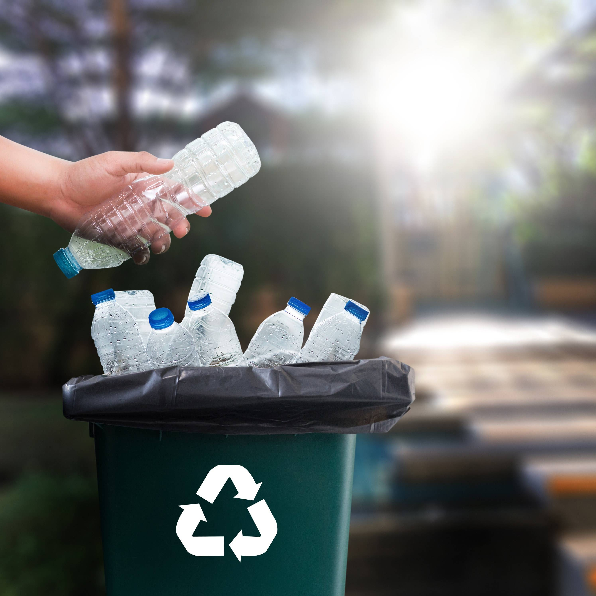

OIL AND ADVANTAGES
What are we?
This website allows you to not only recycle plastic and help the environment but also support cancer patients through a donation system based on bonuses that you receive for recycling plastic. These bonuses can be exchanged for donations to cancer care funds. The website also provides a useful map that shows the nearest recycling points and offers information on how to properly sort waste. What’s especially important is that the site explains how to correctly separate plastic, which is primarily derived from petroleum — this includes most of the plastic products we use daily.
Plastic derived from petroleum is a synthetic material created from hydrocarbons extracted from oil and gas. It includes types like polyethylene, polypropylene, and polystyrene. These materials are widely used in packaging, household items, and other products. Recycling such plastics helps reduce petroleum consumption and minimize environmental pollution, while also reducing the amount of waste sent to landfills. Thus, the site not only helps with recycling plastic and supporting ecology but also provides information on proper sorting and disposal of materials, contributing to more sustainable and mindful consumption.
How oil and plastic are connected?
About 4-8% of global oil production is used for plastic production. While the exact figure may vary depending on the region and processing methods, plastic remains one of the largest consumers of oil. The majority of oil used for plastic is converted into polyethylene, polypropylene, polystyrene, and other synthetic materials that are used in packaging, household products, automobiles, and many other areas. For example: Over 100 million tons of oil are used each year to produce plastic. Plastic accounts for about 40% of all petrochemical products produced today. Thus, oil plays a key role in plastic production, which is linked to negative environmental consequences, including an increase in plastic waste and environmental pollution.
How Oil Contributes to Cancer Development
Oil and its products can increase cancer risk due to toxic and carcinogenic substances. Here’s how: Carcinogenic Chemicals Petroleum products like gasoline and diesel contain substances such as benzene, toluene, and xylene, which are linked to cancers like leukemia and lung cancer. Respiratory Risks Inhalation of oil vapors or polluted air from oil extraction and refining increases the risk of lung cancer, especially for workers and nearby residents. Environmental Pollution Oil spills and contamination release toxins into soil, water, and air, which can lead to cancer over time due to prolonged exposure to harmful chemicals. Petrochemicals in Everyday Products Petroleum-based products, like plastics and solvents, contain toxic substances that can increase cancer risk with long-term exposure. Industrial Accidents Oil-related disasters, such as spills, can release carcinogens into the environment, contributing to cancer risk through short-term exposure. In conclusion, oil and its by-products contribute to cancer development through toxic chemicals, environmental pollution, and industrial accidents. Reducing these risks requires strict safety measures and environmental protection.